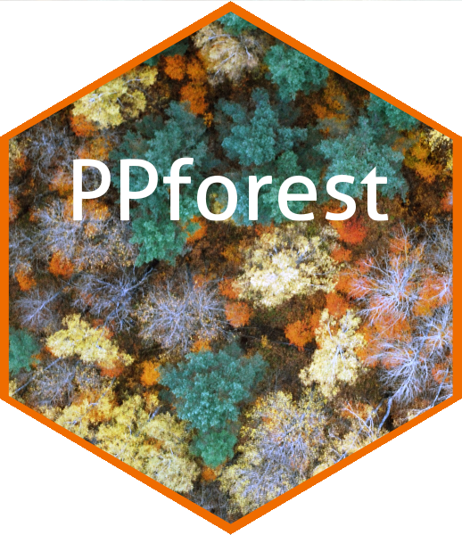
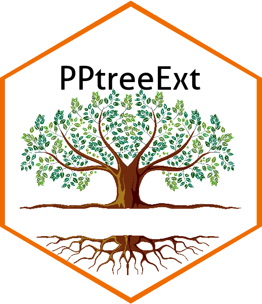
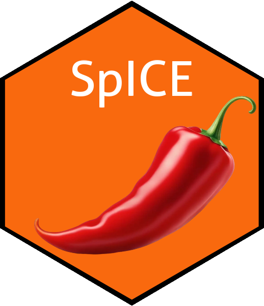
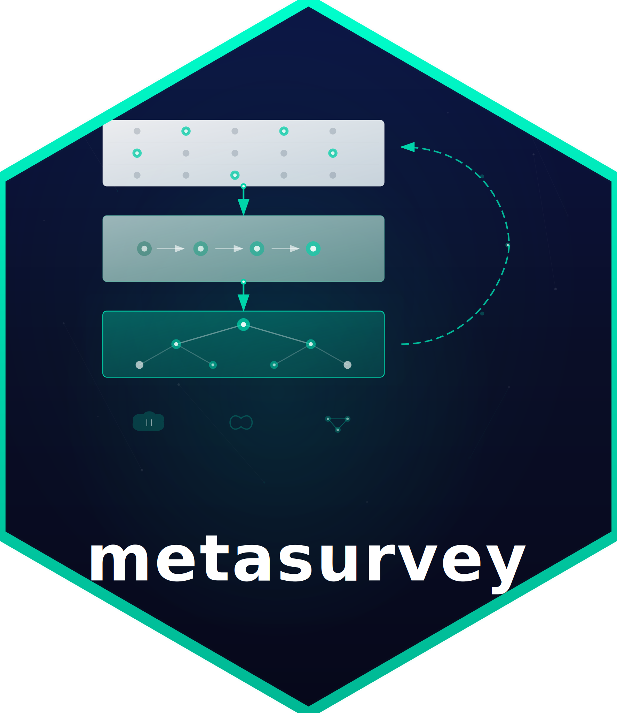
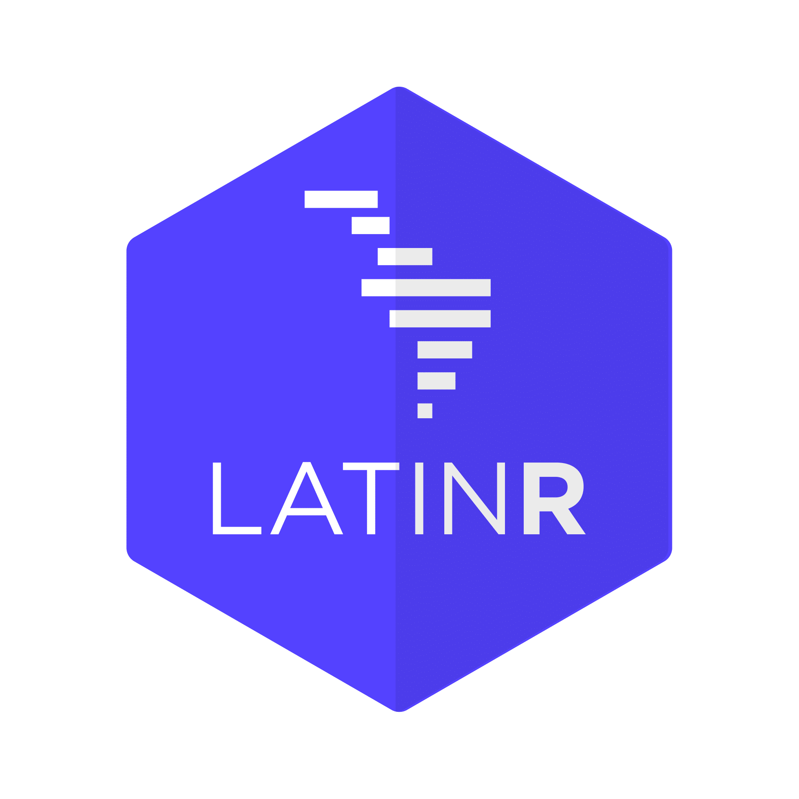
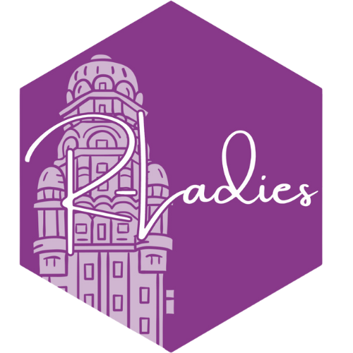

R Packages
CRAN
PPforest
- PPforest: Projection Pursuit Classification Forest

The PPforest package (projection pursuit random forest) contains functions to run a projection pursuit random forest for classification problems. This method utilize combinations of variables in each tree construction. In a random forest each split is based on a single variable, chosen from a subset of predictors. In the PPforest, each split is based on a linear combination of randomly chosen variables. The linear combination is computed by optimizing a projection pursuit index, to get a projection of the variables that best separates the classes. The PPforest uses the PPtree algorithm, which fits a single tree to the data. Utilizing linear combinations of variables to separate classes takes the correlation between variables into account, and can outperform the basic forest when separations between groups occurs on combinations of variables. Two projection pursuit indexes, LDA and PDA, are used for PPforest.
To improve the speed performance PPforest package, PPtree algorithm was translated to Rcpp
PPtreeExt
- PPtreeExt: Extensions for PPtree algorithm

This package presents extensions to the projection pursuit tree (PPtree) algorithm for classification problems to enhance its performance in multi-class problems, and in the presence of nonlinear separations. An interactive web app is also provided to explore the operation of the PPtree classifier and modifications under different scenarios. The PPtree classifier finds separations between classes on linear combinations of variables by optimizing a projection pursuit index. One of its drawbacks is that a rigid tree structure is generated – the depth of a PPtree object is at most G-1 (where G is the number of classes) with each class forming a single terminal node. The modifications described here improve the predictive performance in multi-class problems, and in the presence of outliers or asymmetries. The goal is to make the classifier more flexible, to tackle more complex problems, while maintaining interpretability.
The interactive web app is a key part of the package because allowed us to identify the main issues of the original algorithm and find better alternatives.
GitHub
SpICE
- SpICE: Compute ICE curves clusters with geographical constrains and visualization

The SpICE R package implements the computation and visualisation of SpICE curves. Its combines the individual conditional expectation plot (ICE-plot), a model-agnostic method for interpreting statistical learning models with spatial information. An ICE-plot extension is proposed in which spatial information is used as a restriction to define spatial ICE (SpICE) curves.
metasurvey
- metasurvey: Analysis of survey sampling data using meta-programming techniques.

This package provides a set of functions to facilitate the analysis of survey sampling data using meta-programming techniques. In the package you can create reproducible analysis pipelines, and easily generate reports and tables. The package is designed to work with the survey package, and it is particularly useful for complex survey designs.
Adittionally, the package provides a set of functions to facilitate the variance estimation of complex survey designs, and to facilitate the analysis of complex survey designs using the survey package.
The package is currently under development, and it is not yet available on CRAN. You can install the development version of the package using the devtools package.
Shiny Apps
Under construction
R community
LatinR
- LatinR: Latinamerican Conference About the Use of R in R&D

I’m co-founder of LatinR, which is the Latinamerican Conference About the Use of R in R&D, and I have been co-chair since the first edition.
LatinR is a three-day international conference on the uses of R that has been held in Latin America since 2018. It features trilingual presentations and plenary talks on the application and development of packages for the analysis of mass data, data visualization and machinelearning. The preview days to the conference we have tutorials for a wide range of users and with interesting topics for the community. Catering to academics and professionals, the conference serves as a platform for dissemination of research and academic experimentation, as well as demonstrations of applications and commercial uses developed in R.
The first edition was held in Buenos Aires, Argentina in 2018, with great success. The growth of LatinR exceeded all expectations and sold out the available tickets in its 2019 edition(Santiago de Chile) with the presence of internationally recognized experts such as Hadley Wickham (Chief Scientist in Posit), Erin LeDell (Chief Machine Learning Scientist at H20.ai), and Mine Çetinkaya-Rundel (Posit, Duke University). The 2020, 2021 and 2022 editions were fully virtual, having Spanish, English and Portuguese tutorials and international speakers: Alison Presmanes Hill (Product Manager, Posit) Maëlle Salmon (Research Software Engineer, rOpenSci) in 2020 edition, Tom Mock (Customer Enablement lead, Posit) and Saranjeet Kaur (Open source Contributions) in 2021 and Gabriela De Queiroz (Microsoft), Danielle Navarro (Voltron Data) and Joshua Kunst (Higcharter). We have between 900 to 1000 registered in the online editions. Our last edition was in 2023, held in Montevideo, Uruguay, with around 350 people attending in person. The keynote speakers were Dianne Cook (Monash University), Max Kuhn and Hannah Frick (Posit), and Fabrizio Scrollini (Humanitarian OpenStreetMap Team)
RLadies Montevideo
RLadies_mvd: RLadies Montevideo Chapter.

R-Ladies Montevideo is part of a worldwide organization that promotes gender diversity in the R community (programming language). Our goal is to create a comfortable and friendly space to exchange ideas, knowledge, and make R more popular and accessible, especially among women living in Montevideo.
Although female participation is prioritized, anyone interested in R is welcome. The events will always be free because R-Ladies is a social initiative. The Global Code of Conduct for R-Ladies can be found here.
Join this Meetup to learn about upcoming events, we look forward to seeing you!
You can find us at:
Twitter: @RLadiesMvd and @RLadiesGlobal (R-Ladies from around the world) GitHub By writing to montevideo@rladies.org.